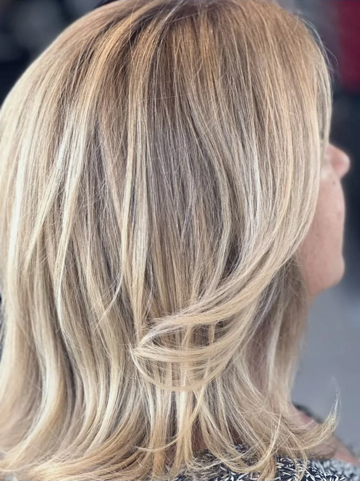
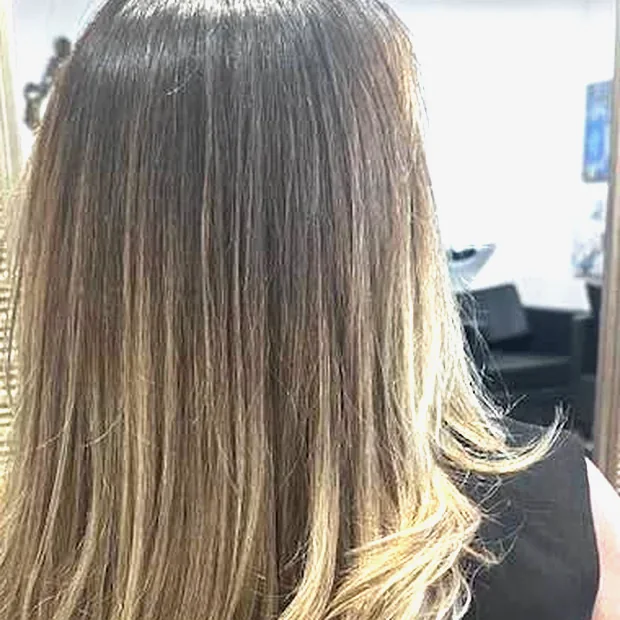
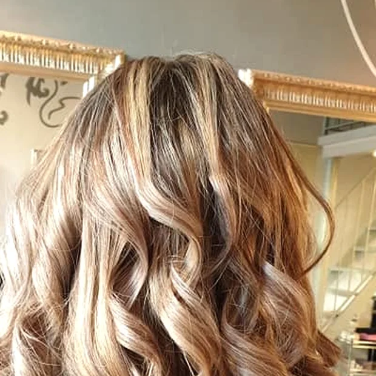
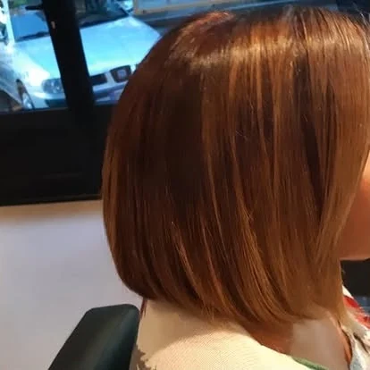
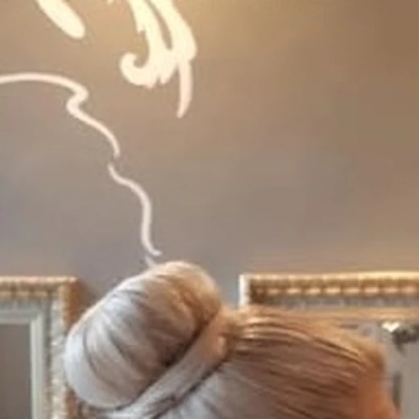

Le salon en photos
L'espace bien-être des Mas de l'Estérel, à Agay, et la vue sur la baie depuis la terrasse. Entrée et parking libres, même sans séjourner au village vacances.
Fait par Elda
Ses dernières couleurs, balayages et lissages, photographiés au salon.





Balayage, mèches et lissage brésilien se chiffrent selon la longueur. Elda vous annonce le prix exact avant de commencer, jamais après. Un appel au 06 09 31 72 23 suffit pour le connaître à l'avance.
Votre prochain rendez-vous
En ligne à toute heure, ou par téléphone aux heures d'ouverture.